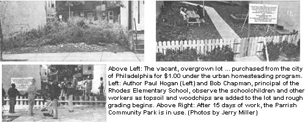

Here's how a group of hard-working neighbors created "The Fastest Park in th e East", otherwise known as . . .
In MOTHER NO. 65, we reported on "Urban Homesteading", an inner-city renovation program - established in Philadelphia, Baltimore, and other cities - which allows citizens to purchase abandoned or repossessed houses for "a dollar down". . . and then helps the buyers obtain loans to restore their newly acquired properties. Now we'd like to share with you a story - about an offshoot of the original program - that describes how residents of one such "made-over" neighborhood pooled their time and resources to create a community park . . . for a total cost of one dollar!
While I usually work with community groups to plan and build public playgrounds, I agreed - several years ago - to help the people of Philadelphia's Parrish Street Community develop their own neighborhood mini- park.
The project began with a "block meeting", during which the community members gathered and discussed what they . . . wanted to do with the tiny vacant lot . . . . . . they'd purchased for $1.00 - under the urban homestead program - from the city. It was decided that the area really had no need for a playground (one had just been built nearby). Instead, the group decided to create a quiet place for older folks . . . a park which would provide them with room to relax, plant flowers, sit under a tree and play checkers, or work in a small community vegetable garden. (I was pleased to observe that the neighborhood children recognized the needs of their parents and their grandparents, and agreed to help.)
After the initial gathering, we held three or four "design meetings", which allowed all the parties involved with the park to discuss its layout and construction. Representatives from the city, Bell Telephone of Pennsylvania, the Garden Club of America, the Playground Clearing House, the Pennsylvania Department of Community Affairs, and the classrooms of the nearby elementary school - as well as the entire block association - attended the sessions.
When the time came for real "roll up your sleeves and get busy" work, almost everyone in the neighborhood assembled to help clear the lot. City workers removed old cars, mattresses, and shopping carts . . . the children rounded up . . . smaller items (such as throwaway bottles and cans) . . . and older residents used wheelbarrows to haul the accumulated litter to the corner trash basket. In two days the lot stood empty and waiting.
The local telephone company donated topsoil, utility poles, and the concrete needed to repair the sidewalk. Free labor was contributed by community members. My only moment of apprehension during the entire project came as we finished pouring the sidewalk. In an effort to forestall the obvious, I delivered a short lecture to the young ones. "Hey, I know there's one thing that you and I would love to do . . . and that's write our names, draw pictures, and put our handprints in the concrete, right?"
"Yeah! " they all shouted in unison.
"But we aren't going to do that . . . because this park is for your parents and grandparents, and they don't want to see it messed up. OK?"
"OK," was the (more subdued) response. Still, I slept badly that night, worrying about what the next morning might reveal . . . but, happily, I arrived at the site the following day to find a beautifully clean, unmarked new walk.
Meanwhile, the rest of the construction was progressing smoothly. Because the park - with its added topsoil - turned out to be two feet higher than the sidewalk, we erected a retaining wall from the poles Bell had donated. We found that there weren't enough posts to go the distance, so we split them in half and built a very attractively edged planting bed. Then we completed the park's grand entrance by using an old marble step we'd discovered while clearing the lot.
Our next move was to fence the park to keep out the city's dog population . . . thereby relieving the neighborhood of the usual urban dog problems. Lumber for the fence was provided by the block association, and there was enough left over for the nearby elementary schoolchildren to assemble a few picnic tables. (The classes simply incorporated the project into their workshop program.)
Finally, the Philadelphia branch of the Garden Club of America arrived with trees and seeds . . . and experts to help Parrish residents landscape their new park. Old oak beams and railroad ties were used to set off the flowerbeds and the public vegetable garden.
Forty-six days after the first meeting - and after a total expenditure of one dollar - the park's dedication ceremony took place . . . complete with a truckload of public officials and the Police and Firemen's Band of Philadelphia. And today - five years later - there hasn't been one instance of vandalism at the site . . . perhaps because every single person in the community pitched in to build the Parrish Community Park, and who would want to destroy that which he or she has created?
EDITOR'S NOTE: MOTHER NO. 65 - which includes the article about the Urban Homestead program as well as a piece, by Paul Hogan, describing ways to build no-cost playground equipment - is available for $3.00, plus $1.00 shipping and handling, from THE Mother Earth News, P.O. Box 70, Hendersonville, North Carolina 28791.
|
 |
|
|